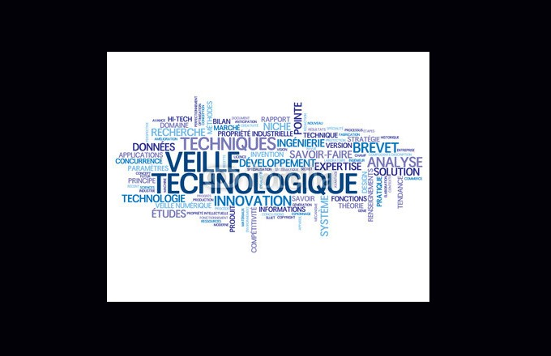
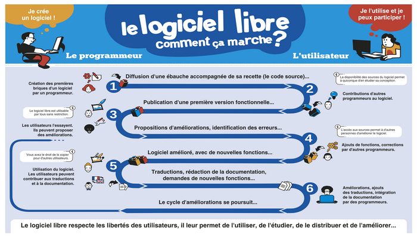
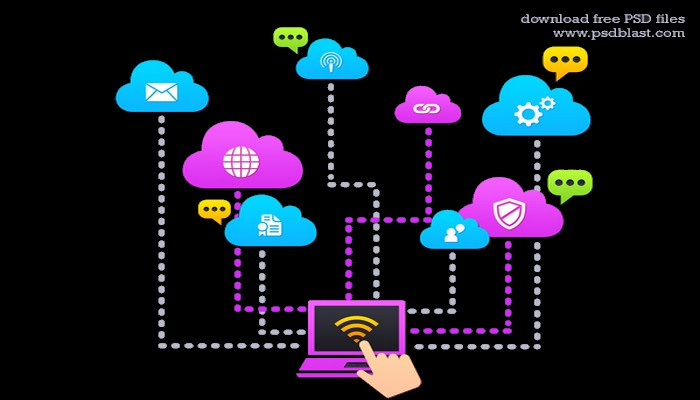
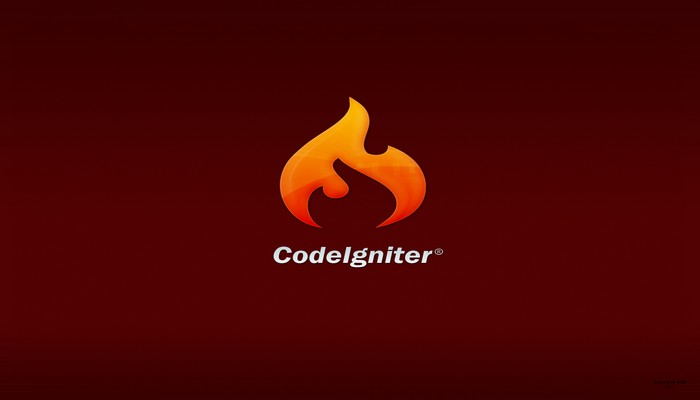
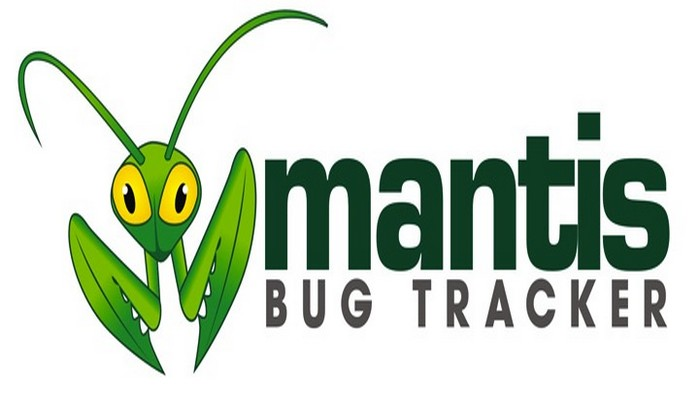
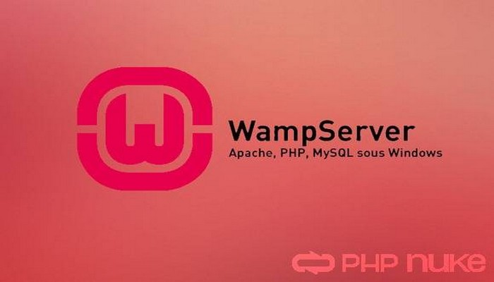
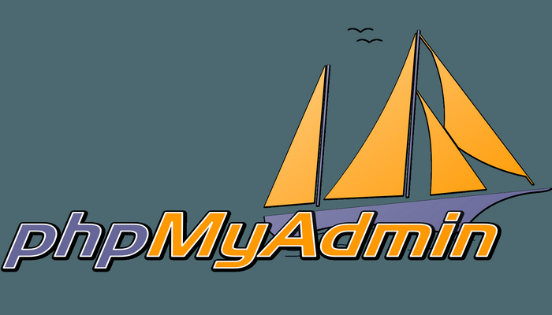

Veille Technologique
La veille informatique est une activité qui consiste à se tenir au courant des avancées technologiques dans le domaine de l'informatique afin de tirer parti de ces avancées le plus rapidement possible. J’ai axé ma veille technologique sur les nouvelles technologies et plus particulièrement sur deux qui commence à faire beaucoup de bruit, j’ai nommé Le clound et les logiciel libre.
Les logiciels libres :
Un logiciel libre est un logiciel dont l'utilisation, l'étude, la modification et la duplication en vue de sa diffusion sont permises, techniquement et légalement1. Ceci afin de garantir certaines libertés induites, dont le contrôle du programme par l'utilisateur et la possibilité de partage entre individus2. Ces droits peuvent être simplement disponibles (cas du domaine public) ou bien établis par une licence, dite « libre », basée sur le droit d'auteur. Les « licences copyleft » garantissent le maintien de ces droits aux utilisateurs même pour les travaux dérivés. Les logiciels libres constituent une alternative à ceux qui ne le sont pas, qualifiés de « propriétaires » ou de « privateurs »Note 1. Ces derniers sont alors considérés par une partie de la communauté du logiciel libre comme étant l'instrument d'un pouvoir injuste, en permettant au développeur de contrôler l'utilisateur3. Le logiciel libre est souvent confondu à tort avec : les gratuiciels (freewares) : un gratuiciel est un logiciel gratuit propriétaire, alors qu'un logiciel libre se définit par les libertés accordées à l'utilisateur. Si la nature du logiciel libre facilite et encourage son partage, ce qui tend à le rendre gratuit, elle ne s'oppose pas pour autant à sa rentabilité principalement via des services associés. Les rémunérations sont liées par exemple aux travaux de création, de développement, de mise à disposition et de soutien technique. D'un autre côté les logiciels gratuits ne sont pas nécessairement libres, car leur code source n'est pas systématiquement accessible, et leur licence peut ne pas correspondre à la définition du logiciel libre. l’open source : le logiciel libre, selon son initiateur, est un mouvement social4 qui repose sur les principes de Liberté, Égalité, Fraternité5 ; l’open source quant à lui, décrit pour la première fois dans La Cathédrale et le Bazar, s'attache aux avantages d'une méthode de développement au travers de la réutilisation du code source.

Mon deuxieme stage étais dans une entreprise qui travail essentielement sur des logiciles libres. De plus j'ai découvert cette Ecole, qui propose des formations aprés un bac + 2 en informatiques et qui est spécialement accés sur le logiciel libre. Je vous conseil vivement de regarder cette vidéo qui présente le concept de logiciel libre ainsi que l'école avec beaucoup d'humour.
Le cloud computing :
Le cloud computing ou informatique en nuage est une infrastructure dans laquelle la puissance de calcul et le stockage sont gérés par des serveurs distants auxquels les usagers se connectent via une liaison Internet sécurisée. L’ordinateur de bureau ou portable, le téléphone mobile, la tablette tactile et autres objets connectés deviennent des points d’accès pour exécuter des applications ou consulter des données qui sont hébergées sur les serveurs. Le cloud se caractérise également par sa souplesse qui permet aux fournisseurs d’adapter automatiquement la capacité de stockage et la puissance de calcul aux besoins des utilisateurs. Pour le grand public, le cloud computing se matérialise notamment par les services de stockage et de partage de données numériques type Box, Dropbox, Microsoft OneDrive ou Apple iCloud sur lesquels les utilisateurs peuvent stocker des contenus personnels (photos, vidéos, musique, documents…) et y accéder n’importe où dans le monde depuis n’importe quel terminal connecté.
Les services du cloud computing On distingue plusieurs types de services cloud : IaaS (Infrastructure as a Service, en anglais) : le système d’exploitation et les applications sont installés par les clients sur des serveurs auxquels ils se connectent pour travailler comme s’il s’agissait d’un ordinateur classique. PaaS (Platform as a Service, en anglais) : dans ce mode, c’est le fournisseur du service cloud qui administre le système d’exploitation et ses outils. Le client peut installer ses propres applications si besoin. SaaS (Software as a Service, en anglais) : les applications sont fournies sous forme de services clés en mains auxquels les utilisateurs se connectent via des logiciels dédiés ou un navigateur Internet. Pour le grand public, il s’agit par exemple de messageries électroniques type Gmail, Yahoo, Outlook.com ou de suites bureautiques type Office 365 ou Google Apps.

Enfin, j'utilise comme application téléphone mobile FlipBoard qui me permet de recevoir des actualités concernant des nouveautés technologiques, cependant avec cette application je suis au courant de divers thèmes d'actualités, je doit donc trier les informations qui m'intéresse et qui peuvent venir allimenter ma veille technologique.
Codeigniter :
CodeIgniter est un framework libre écrit en PHP. Il suit le motif de conception MVC et s'inspire du fonctionnement de Ruby on Rails. CodeIgniter est issue de la société EllisLab1 et a été conçu par Rick Ellis2, PDG de cette entreprise située dans l'Oregon, aux États-Unis. CodeIgniter est un dérivé de leur principal projet : ExpressionEngine3. Il en est très largement inspiré et profite de l'expérience acquise sur ce projet.
Durant mon deuxieme stage j'ai utilisé codeigniter en participant au projet "votremachine".
De nombreux tutoriel trés complet sont disponible pour apprendre à utiliser ce framework
Mantis bug tracker:
Mantis est un système de suivi d'anomalies logicielles (bugs) basé sur une interface web. Il est écrit en PHP et requiert une base de données (MySQL, SQL Server, PostgreSQL ou DB2) supportée et un serveur web. Mantis peut être installé sur Microsoft Windows, Mac OS, OS/2 et sur de nombreux OS du type Unix. Le principe de cet outil consiste à enregistrer la déclaration d'un bogue informatique, puis pour les techniciens de maintenance informatique concernés, à mettre à jour l'avancement de sa résolution, jusqu'à sa clôture. Le déclarant de l'anomalie peut s'informer à tout moment via le serveur Web de l'avancement du traitement de son problème. comme outil de gestion de requêtes mais également comme outil de planification de fonctions. Sur chaque bogue/requête/fonction une série de notes saisies par les intervenants viennent enrichir une description initiale. En standard le workflow de validation d'un bogue s’appuie sur les états suivants :
- Nouveau
- Commentaire
- Accepté
- Confirmé
- Résolu
- Fermé
Wamp server:
WampServer est une plate-forme de développement Web sous Windows pour des applications Web dynamiques à l’aide du serveur Apache2 , du langage de scripts PHP et d’une base de données MySQL. Il possède également PHPMyAdmin pour gérer plus facilement vos bases de données.
Installation et configuration :
Avant de télécharger « WampServer », il faut vérifier quel est le type du système de votre PC : 32 ou 64 bits ?
Cliquez sur le bouton « Démarrer » Cliquez sur « Panneau de configuration » Cliquez sur « Système et sécurité » Cliquez sur « Système » ou Sur le bureau, faites un clic droit sur « Ordinateur » Dans le menu contextuel, sélectionnez « Propriétés »
Pour télécharger « Wampserver », suivez le lien : http://www.wampserver.com/ En fonction du type de système relevé, téléchargez la version « Wampserver » adaptée à votre PC.
Installez « Wampserver » en exécutant le fichier « wampserver2.2e-…exe » Paramétrez la langue française Cliquez droit sur l’icône « Wampserver » en bas à droite de la barre des tâches Sélectionnez le dossier « Langue » puis « french » Modifiez les paramètres du fichier « php.ini »
Phpmyadmin:
phpMyAdmin (PMA) est une application Web de gestion pour les systèmes de gestion de base de données MySQL réalisée en PHP. Il s'agit de l'une des plus célèbres interfaces pour gérer une base de données MySQL sur un serveur PHP. De nombreux hébergeurs, gratuits comme payants, le proposent ce qui évite à l'utilisateur d'avoir à l'installer.
Lien vers tutoUngit:

ungit est un client git open-source qui permet de gérer facilement le versionning et le travail en équipe sur tout type de projets Il existe divers clients git tels que GitHub for Windows ou SourceTree permettant de simplifier la gestion de git et la manipulation de ses commandes. Néanmoins, ungit est révolutionnaire tant par son interface ultra simplifiée et facilement compréhensible que par son potentiel à améliorer la productivité des développeurs.
Installation ungit est un client web développé avec nodejs et forcément basé sur git. Il est donc nécessaire de posséder ces outils pour utiliser ungit.
git : En premier lieu, vous allez avoir besoin de git qui est téléchargeable à partir de ce lien. Git est cross-paltform, ce qui fait que vous pouvez l'utiliser soit sur Mac, Linux ou Windows. Il en est de même pour nodejs que nous allons voir maintenant.
nodejs : Ensuite, nous avons besoin de nodejs qui va nous permettre de lancer le client web. L'outil est téléchargeable via ce lien.ungit via npmUne fois les deux outils installés, il ne nous reste plus qu'à installer ungit. Cette fois-ci, on utilisera npm (node package manager), gestionnaire de dépendances pour nodejs, grâce auquel nous pouvons installer n'importe quel plugin.Pour installer ungit, c'est très simple. Lancez une Invite de commandes et tapez ceci : npm install -g ungit.
Lien pour découvrir toutes les commandes de bases.